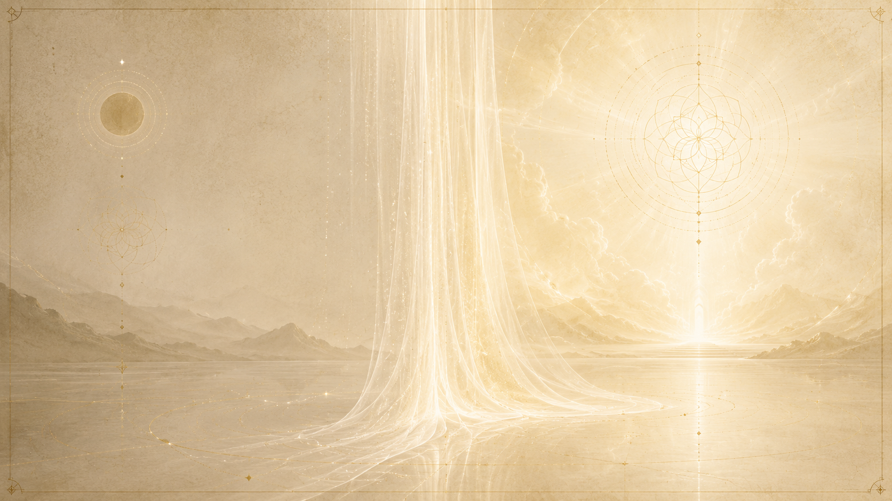

面紗是什麼:意識與潛意識之間的那道遺忘
「我們或許寧可把這個狀態稱為『更充滿神秘』,而不是『相對不可得』。」

所謂「面紗」,Ra 講得很精確:它是「意識心智與潛意識心智之間」的一道屏障。提問者問,這道改變是不是讓「心智的母體(Matrix)」與「賦能者(Potentiator)」之間的訊息「相對變得彼此不可得」?Ra 修正了用詞——「我們或許寧可把這個狀態稱為『相對更充滿神秘』,而不是『相對不可得』」;接著確認:這就是要在母體與賦能者之間造出「某種面紗」,而這道面紗,「發生在我們現在所稱的意識心智與潛意識心智之間」。
用我們最切身的話來說,面紗就是「生與死之間的遺忘」。提問者把它整理成:在肉身投生期間,「無法有意識地記起投生之前所發生的一切」;Ra 確認這道「遺忘」正是面紗最直接的效果。所以你我現在這種「不記得自己從哪裡來、死後往哪裡去、上一世是誰」的處境,並不是第三密度天生如此,而是一個被刻意設計、放進來的條件。
Ra 還補上一個容易被忽略的形上學細節:面紗純粹是「空間/時間(space/time)」這一側的現象。祂說「面紗化過程是一個空間/時間現象」——在時間/空間(time/space)那一側,「面紗前與面紗後存在的是同樣的條件」。換句話說,被遮蔽的只有我們投生在物質幻象裡的這個面向;在更深的層次,連續性其實從未中斷,只是肉身中的意識心暫時被遮住了。
面紗之前的第三密度:沒有遺忘,慢得像烏龜對獵豹
「課程的收穫,相對速度有如烏龜之於獵豹。」
單純的存有,沒有面紗,沒有遺忘
Ra 描述這個八度最初的存有時說:「最初的心智、身體、靈的存有並不複雜。在這個體驗八度的開端,心/身/靈的體驗是單一的。沒有第三密度的遺忘。沒有面紗。」當時的存有同樣會經歷「肉身投生」、同樣會在一段段投生中進進出出,投生的理想長度「接近你們所稱的一千年」(這個數字無論其他條件如何都是常數);但其間沒有任何記憶被切斷——投生中知道的,與不在肉身時知道的,是同一件事。
學習為什麼慢——烏龜對獵豹
提問者問:既然只有「服務他人」這一個極性方向、而且大家都意識到要朝它努力,那為什麼這麼難達成、難到存有得把第三密度的循環「習慣性地重複許多次」?這就帶出全章最有名的比喻。Ra 說,在那種沒有面紗的條件下,形成的是「一個最為蒼白的體驗連結點(a most pallid experiential nexus),其中課程被收穫的相對速度,有如烏龜之於獵豹」。學習不是不會發生,而是慢到近乎停滯。
技術很先進,卻缺一味「gusto」
這不是因為那些存有笨或原始。Ra 說當時「有許多技術上高度先進的社會」,因為當你「居住在一種彷彿持續潛在靈感的狀態裡」,要產生任何想要的結果都很容易。真正缺的東西,Ra 用了一串詞:即使最精密的社會結構,「由於其存有的非複雜本質」,所缺的是「你們可稱為意志(will)的東西,或者用更通俗的詞——gusto(衝勁),或 élan vital(生命的衝力)」。一切都太容易、太安穩,於是沒有人有強烈的動機去推自己一把。
「神聖的快樂」與臍帶般的安全感
Ra 把那種心境形容得很傳神。祂要提問者想想「那些神聖地快樂的人」——他們「幾乎沒有改變或改善自身處境的衝動」。這正是非複雜心/身/靈的結果:雖然也有愛其他自我、服務其他自我的可能,但「壓倒性地覺察到自我之中的造物者。與造物者的連結就像臍帶。安全感是全然的。因此,沒有任何愛是極其重要的;沒有任何痛苦是極其可怕的;因此,不會有人為了愛去努力服務,也不會有人因恐懼而力求受益」。提問者把它比作「生於極度富裕與安全中的人」,Ra 說在這個比喻的嚴格界限內,這很有洞察力。
連衰老、疾病、死亡都看得清清楚楚
面紗之前,連身體的終結都是透明的。Ra 說那時的身體「顯現出所有老化的徵象」,跟現在使我們認得「步向離開第三密度投生」那套過程的徵象一樣——皺紋、衰老一應俱全。差別只在於存有「知道」死亡之後心/身/靈仍會延續,所以疾病與死亡是「投生計畫中一個良善的領域」;投生「以疾病走向死亡的正常結局而告終,並被如此接納,因為在沒有面紗的情況下,心/身/靈會延續是清楚明白的」。死亡不嚇人,因為沒有人忘記過自己不會真正消失。
為何要引入面紗:擴展自由意志的大實驗
「之前所有的實驗,雖然產生了許多體驗,卻缺少那個被認為關鍵的成分——也就是極化。」
樓梯與門檻:沒人爬得上去
問題的核心是:畢業到第四密度,需要存有有能力「使用、歡迎並享受造物者那白光的某種強度」。Ra 用一個樓梯的意象說明面紗之前的困局:當時的衡量「有如一個存有走上一段樓梯,每一階都被賦予某種光的品質」,存有停在哪一階,那階就是第三密度的光或第四密度的光,「兩階之間隔著門檻。要跨過那道門檻很困難。每個密度的邊緣都有阻力」。需要「信心或意志的官能」被理解、滋養、發展,存有才可能尋求越過第三密度的邊界——而「那些不做功課的存有,無論多麼和善,都不會跨過去」。這正是面紗引入之前,諸 Logos 所面對的處境。
缺的那一味:極化
Ra 把話講得很直接。祂說 Logos 清楚第三密度「畢業」的要求,而「之前所有的實驗,雖然產生了許多體驗,卻缺少那個被認為關鍵的成分;也就是極化(polarization)。讓存有極化的傾向太微弱了,微弱到存有習慣性地把第三密度的循環重複了許多次。人們渴望讓『極化的潛能』變得更可得」。換句話說,引入面紗的目的,就是要讓「抉擇」這件事真正能發生、能累積出重量。
不做功課的學生——學校的比喻
提問者反覆追問:既然極化是「顯而易見該做的事」,為什麼大家不更努力?Ra 用了一個學校的比喻收尾。祂要提問者把那些存有想成「在求學年歲中很年幼的學生」:這個學生「無論功課有沒有完成,都被餵養、被穿衣、被保護。因此這個存有不做功課,反而享受遊戲時間、用餐時間和假期。直到出現了一個讓它想要出類拔萃的理由,大多數存有才會嘗試去出類拔萃」。面紗,就是 Logos 拿掉那份無條件的安穩、逼出「想要出類拔萃的理由」的設計。
更宏觀的理由:讓表意者「成為它所不是的」
往上追到 Logos 的層次,面紗只是一連串更大實驗的第一步。Ra 說,第一個「在其子 Logos 中、以完整意義注入你們現在所見之自由意志」的 Logos,是因為深入沉思「表意者(significator)」這個概念才走到這一步的:「這個 Logos 假設了心智、身體與靈可能是『複合的(complex)』。為了讓表意者成為它所不是的,它就必須被賦予造物者的自由意志。」這顆種子思想,後來被「相當漫長的一系列 Logos」不斷精煉。Ra 也明說,正是因為領悟了「抉擇」,這類實驗才演化出來;而把兩極分開、讓存有自願去極化,是因為「透過自願的兩極化行動,功被完成得遠更有效率,且具有更大的純度、強度與多樣性」。提問者引用 Ra 早先的話「第三密度中所做的抉擇,是創造所環繞旋轉的軸心」,Ra 確認這「正是我們現在對你們說的、創造之本性的陳述」。
面紗如何被造出:在母體與賦能者之間,宣告心智是複合體
「意識與潛意識兩部分之間面紗化的機制,是一個『心智是複合的』的宣告。」
母體與賦能者:被面紗隔開的兩端
要懂面紗造在哪裡,得先懂它隔開的兩樣東西。Ra 說:「心智的母體是那一切由之而來者。它本身不動,卻是潛能中一切心智活動的啟動者。心智的賦能者是那偉大的資源,可被看作一片海洋,意識不斷往其中更深、更徹底地汲取,以便創造、構思,並變得更有自我意識。」用塔羅的語言,母體是「魔法師」、賦能者是「女祭司」。面紗之前,這兩者之間的訊息是直接流通的;面紗化做的,就是在這兩者之間放下一層「相對更充滿神秘」的遮蔽。
那個動作本身:宣告心智「是複合的」
當提問者直接問「最初那次面紗化的機制是什麼」,Ra 給了全章最核心的一句話:「意識與潛意識兩部分之間面紗化的機制,是一個『心智是複合的』的宣告。這接著又使得身體與靈也變得複合。」這不是裝上某種物理裝置,而是一個層次上的「宣告/設定」——一旦心智被宣告為複合的,母體與賦能者就不再是單純地把體驗從賦能者熔接給母體,而是「心智的種種複雜性被演化出來;心智本身成了一個擁有自由意志、尤其是擁有『意志』的演員」。
「表意者必須成為複合體」
Ra 反覆強調這個概念:「表意者必須成為複合體。」提問者問這是什麼意思,Ra 的回答簡潔到近乎定義:「所謂複合,就是由不只一個特徵性的元素或概念所組成。」面紗之前只有九個原型(三個屬心智、三個屬身體、三個屬靈,各自在母體、賦能者、表意者的範疇下運作);面紗化之後,原本單純的表意者「被有意識與無意識之間那些微妙的移動弄得複合起來」,原型也隨之增生、精煉。Ra 形容,這在一個子 Logos 之內造出了「造物者對抗造物者」的「動態張力」,而自由意志一旦被擴展進心/身/靈複合體,便「依其本性不斷地創造、再創造、持續創造」。
一場赤裸的假設,沒有預設答案
值得記住的是:這是一場真正的實驗,連 Logos 自己都不知道結果。Ra 說,最初那場大實驗「並未規劃任何(穿透面紗的)方法」,因為「一如所有實驗,它立足於假設的赤裸之上。結果是未知的」。也因此面紗化不是一次到位的精密工程,而是「許多次相繼的實驗」:有些把身體的某些功能蒙上、某些不蒙,「其中很大一部分實驗,產生了無法存活、或只勉強存活的身體複合體」。
面紗之後的改變:不隨意的身體、業力,與強烈的極化
「分離之怒,沒有面紗就不可能。」
原本能隨意控制的身體功能,變成不隨意
最具體的改變發生在身體上。Ra 說:「在這場大實驗之前,一個心/身/靈能夠控制血管中血液的壓力、那個你稱為心臟的器官的跳動、那個你稱為痛的感覺的強度,以及所有現在被理解為不隨意或無意識的功能。」面紗化之後,這些功能多半被移到意識搆不著的潛意識那一側。為什麼痛覺要被蒙上?Ra 說面紗前的痛覺「有如火災警報之於那些聞不到煙味的人」——是個提醒身體改變姿勢、避開傷害源的訊號,而面紗前的存有可以在受傷後「在心智中把痛切掉,直到痊癒」。但 Ra 也澄清,並不是隨便把什麼都蒙上:讓神經受器「無意識地把痛的扭曲整個遮掉,並不是一個有利於存活的機制」,所以哪些蒙、哪些不蒙,是無數次實驗篩選出來的結果。
業力的出現:分離之怒
面紗之後才出現的,還有業力與「分離」這整套心理。提問者拿一個具體例子問:如果 Jim 的腎臟毛病發生在面紗之前,會不會不一樣?Ra 的回答把面紗的心理後果濃縮成三句:「分離之怒,沒有面紗就不可能。對身體需要液體缺乏覺察,沒有面紗就不太可能。決定在紀律中沉思完美,沒有面紗就極不可能。」也就是說,正是遺忘讓「我」與「其餘者」對立起來,憤怒、忽視、以及那種逼自己在紀律中臻於完美的強烈動機,才第一次成為可能。
催化劑被「放大」,極化變得可能且強烈
面紗最關鍵的功效,是讓人生遭遇真正「變成催化劑」。提問者整理道:面紗之前,所謂催化劑「不是催化劑,因為它沒有有效率地製造極性」——因為存有把遭遇「看得更清楚地只是『太一造物者』的一個體驗,而不是其他心/身/靈複合體作用的結果」;Ra 回應「所討論的概念似乎沒有重大扭曲」。面紗把「遭遇」與「對它的看見」之間隔開,遭遇才被「裝載」成會極化的體驗。
Ra 給了一個鮮活的例子:一個被隨機紅光性衝動激起的男與女相遇。面紗之前,溝通「遠更可能是針對滿足那個紅光性衝動的主題」,事後連名字之類的訊息都能「以清晰的感知」交換;祂直言「面紗前體驗所能處理的催化劑,跟面紗後提供給徹底困惑的男與女的催化劑相比,微不足道」。面紗後,同樣的相遇變成「迷惑」——而正是這份迷惑,代表了「面紗化之後催化過程被放大的效率」。Ra 也由此說明:面紗前的體驗無論好壞、喜悲,都會是「蒼白的,沒有那種生動性,沒有那種使面紗後的心/身/靈複合體興味盎然的、敏銳的興趣邊緣」。
面紗的「半透」性質,與行家如何穿透它
「其他自我,是這條穿透面紗之路上的首要催化劑。」
面紗是「半透」的
面紗並非完全密不透光。提問者直接問:面紗應該是我所謂「半透(semi-permeable)」的吧?Ra 簡短確認:「面紗確實如此。」這一點很重要——它意味著遺忘雖然真實,卻不是牢不可破;它留了縫,讓尋求者有機會回望面紗的另一側。
沒有預設的穿透法,而是要多少有多少
有趣的是,Ra 說最初那場大實驗「並未規劃任何穿透面紗的方法」。結果卻是「經由體驗與經驗發現:穿透面紗的方法,有如心/身/靈複合體的想像力所能提供的那麼多」。存有「想要知道那未知之物」的渴望,本身就把作夢、以及通往行家境界(adepthood)的種種平衡機制逐漸向尋求者打開。各種「未顯化(unmanifested)」的自我活動——獨處時、不對外表現時的內在功課——也被發現能在某種程度上穿透面紗。
綠光之愛的孕育,行家由此而生
但 Ra 點名了最有效的那條路。祂說,穿透面紗「可被看作根植於綠光活動的孕育之中,那無所求回報的、全然慈悲的愛」。如果這條路被走下去,「更高的能量中心將被啟動並結晶,直到行家誕生。在行家之內,潛藏著或多或少拆解面紗的潛能,使一切再度被看見為一」。也就是說,穿透面紗的鑰匙,不是某種技巧或儀式,而是先讓綠光(無條件的愛)在自己之內被孕育、結晶,煉成行家,行家自然就有能力把面紗一點一點掀開。
其他自我:首要的催化劑
那麼,什麼最能引發這種穿透?Ra 給的答案是「其他自我」。祂說:「到目前為止,最生動、甚至最奢華的穿透面紗的機會,是極化存有之間互動的結果。」祂特別指出兩點:其一,是兩個都走上服務他人之路(或少數情況下走服務自己之路)的極化存有,彼此關係中那「極端的極化潛能」;其二,是祂稱為「加倍效應」的東西——「那些心意相同、一起尋求的人,將遠更確定地找到」。Ra 把這條路講得很清楚:「其他自我,是這條穿透面紗之路上的首要催化劑。」我們之所以需要彼此,正因為遺忘讓「對方」成了最能把我們搖醒的那面鏡子。
這場大實驗成功了嗎?
「這些實驗的結果,是造物者對造物者一個更生動、更多樣、更強烈的體驗。」
立刻就生出了兩極
實驗的第一個果實來得很快。Ra 說,最初的那些 Logos「立刻就產生了服務自己與服務他人的心/身/靈複合體」。只是這些存有的「可收割性」並不那麼即時,於是「原型的精煉就隨之展開」。值得注意的是:面紗之前根本沒有「服務自己」這個概念可言——Ra 明說「服務自己的概念,在我們一直稱為面紗化過程的那件事之前,並不成立」。是面紗本身,讓兩條道路第一次成為真實的選項。
抉擇與魔法,從此誕生
面紗也是「抉擇」與「魔法」的起點。Ra 說:「隱含在兩個原型的面紗化或分離之中的,就是『抉擇』的概念。」而「魔法的能力,就是有意識地使用所謂的潛意識」——既然面紗把潛意識隔開,有意識地重新搭橋過去這件事,才第一次成為一門可修的功夫。耐人尋味的是:面紗之前,第三、第四密度的「魔法潛能」其實「遠遠大於」改變之後,因為那時意識與潛意識之間沒有阻隔;但「使用這份潛能的渴望或意志,卻遠遠、遠遠地少」。面紗用「能力的下降」換來了「意志的爆發」。
Ra 的總評:更生動、更多樣、更強烈
那麼,值不值得?提問者問這場原始實驗的結果是什麼,Ra 的回答可以當作整章的結論:「這些實驗的結果,是造物者對造物者一個更生動、更多樣、更強烈的體驗(a more vivid, varied, and intense experience of Creator by Creator)。」對照面紗之前那個「蒼白的體驗連結點」、那種烏龜般的學習速度,面紗顯然達成了它的目的:它用遺忘換來了真實的不確定,用不確定換來了極化的衝勁,讓造物者得以在更高的對比與強度中認識自己。
一個但書:它也製造了大量未預期的扭曲
Ra 並沒有把它說成一場完美無瑕的成功。面紗之後,出現了面紗前幾乎沒有的東西:會傳染的疾病(如性病,「幾乎完全是面紗化之後心/身/靈複合體互動的產物」)、「分離之怒」、無意識的奴役(面紗前「並無這種無意識的奴役」,而現在「善意而非蓄意的奴役多到難以一一列舉」)。實驗確實放大了體驗的強度,但同一個機制也放大了痛苦與扭曲——這正是為什麼第三密度被 Ra 稱為「比其他密度密集得多」的、強烈而短促的抉擇之窗。